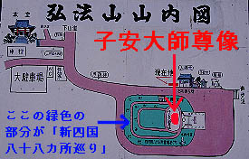

子安弘法大師尊像/愛知県蒲郡市
以前、蒲郡の延命山大聖寺大秘殿に行った際、山の上にすっごく恐い顔の大仏があったのを見た。
何やら銅色に光る大仏さんはただならぬ雰囲気を醸し出していたので（「大仏というだけでただならないでしょ」との声もあり）大秘殿を見た後に寄ってみようかと考えていた・・・
ところが、大秘殿のあまりの濃ゆさに大仏の事はすっかり忘れてしまい、大仏さんの事を思い出したのが家に帰ってから、という始末だった。
・・・それから、数年後・・・
その気になる大仏さんの正体を確かめるべく、蒲郡に向かった。
蒲郡の三谷温泉。斜陽化がググッと進んだ様子の寂し気なところである。
温泉街の裏手に立つ其の名も弘法山という山に車を進める。
くねくねと登っていくと立派なお寺が見え、その少し先に例の大仏さんがあった。
案内によると子安弘法大師尊像とある。お、そうか大師様か。
右手に錫杖、左手には赤ん坊を抱えている。重くないっすか？
蒲郡の三谷温泉を見下ろすように建つこの大師像、近くで見るとますますお顔が恐い。
観音や仏陀でない、というところが生々しくもある。
毎日この大師様に見下ろされて暮らす三谷温泉の住民の方々、ちょっとお気の毒様である。
「コラ！健太（仮名）！いたずらばっかりしてると大師様に抱っこしてもらうよ！」
「うえ〜ん、もう悪い事はしないからそれだけは勘弁しておくれよお〜」
・・・てな会話が繰り広げられてそう・・・
さて、この大師像、恐い顔を除くと最大の特色は二本足で立っているという事である。
通常、立ち姿の大仏、大観音というのは衣で足が隠れているものだ。
その方が地面に接している面積が多く構造的に安定しているからだろう。
二本足で立つ、と言う事は安定性が悪く構造上リスキーな試みであったろう。
ここの大師像はズバッと男らしく裾を捲っておられる。
もしかしたら錫杖を持っているのも二本の足だけでは不安定なので3点で支えようとするためのアイテムなのかも知れない。
ちなみに胎内巡りとかはないです。これだけ頑張っている大師様にそこまで要求するのは酷というもの。

大師像の後ろのこんもりとした塚には新四国八十八カ所巡りと称して犬小屋大のコンクリート製の祠が二重の通路に沿って並んでいる。これを順番に巡っていけば四国八十八カ所を巡礼したのと同じ功徳があるのだろう、たぶん。
場所が場所だけに大仏と模擬巡礼の関連性を考える上で興味深い。
っていうか胎内巡りがない事の埋め合わせかも。
ちなみに大きさは台座込みの高さが約30メートル。像高は18.78mだそうです。
東洋一の大師像だそうで。
大師像なんぞほとんど日本にしかないんだから世界一にしちゃってもいいんだろうけど・・・
・・・もしかして、アフリカあたりに世界一の大師像があったりして・・・
それにしても「東洋一」っていい響きですよねえ〜。最近聞かないなあ、東洋一。
追記
子安弘法大師尊像ひとくちメモ
この大師像は昭和13年に出来たものである。
以前紹介した聚楽園大仏などとほぼ同時期の昭和初期大仏ブームの頃の大仏である。
瀧信四郎という名古屋の実業家が建立したそうで。
戦前の大仏、大観音というものは実業家がオーナーであるケースが多い。
お寺が主導して大仏をつくるケースが多い昨今、実業家が大仏を建立する、という昭和初期大仏ブームは大変興味深い。
2000.12.
珍寺大道場 HOME